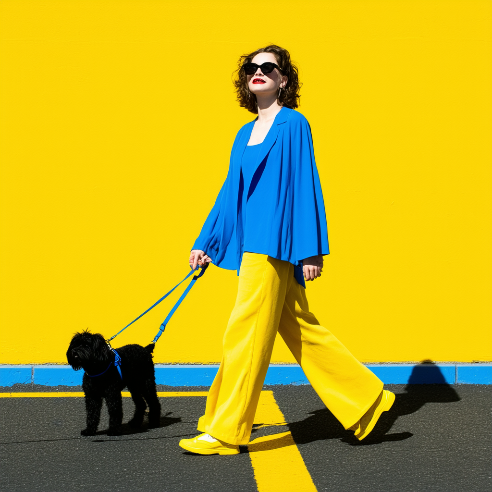

画龙点睛
- The background is a solid yellow background in the distance.
- The floor is black asphalt with a yellow line in the center.
- Shadows only appear on the floor.
- A white female fashion model in her 20s is walking with a dog on a blue leash on her right
- looking up and to the right.
- The dog is black and reliable.
- A white woman in her 20s has permed brown hair that goes down to her shoulders.
- She was wearing black sunglasses and had lipstick on her lips.
- She is wearing a blue gown, long yellow skinny pants, and yellow shoes.
